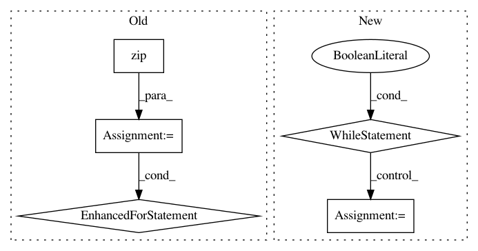

159275e9df878fe7882006898d91026e6842499b,selfplay_mcts.py,,play,#Any#Any#Any#Any#,11
Before Change
probs, vals = network.run_many([leaf.position for leaf in leaves])
for leaf, prob, val in zip(leaves, probs, vals):
leaf.incorporate_results(prob, val, up_to=player.root)
if (verbosity >= 3):
print(players[0].root.position)
print(players[0].root.describe())
After Change
prob, val = network.run(first_node.position)
first_node.incorporate_results(prob, val, first_node)
while True:
player.root.inject_noise()
current_readouts = player.root.N
// we want to do "X additional readouts", rather than "up to X readouts".
while player.root.N < current_readouts + readouts:
player.tree_search()
if (verbosity >= 3):
print(players[0].root.position)
print(players[0].root.describe())
// Sets is_done to be True if player.should resign.
if player.should_resign(): // TODO: make this less side-effecty.
break
move = player.pick_move()
player.play_move(move)
if player.is_done():
// TODO: actually handle the result instead of ferrying it around as a property.
player.result = player.position.result()
if (verbosity >= 2) or (verbosity >= 1 and i % 10 == 9):
print("Q: {}".format(p.root.Q))
dur = time.time() - start
print("%d: %d readouts, %.3f s/100. (%.2f sec)" % (
i, readouts, dur / readouts / 100.0, dur), flush=True)
if verbosity >= 3:
print("Played >>",
coords.to_human_coord(coords.unflatten_coords(players[0].root.fmove)))
// TODO: break when i >= 2 * go.N * go.N (where is this being done now??...)
return player
In pattern: SUPERPATTERN
Frequency: 3
Non-data size: 5
Instances
Project Name: tensorflow/minigo
Commit Name: 159275e9df878fe7882006898d91026e6842499b
Time: 2018-01-21
Author: brian.kihoon.lee@gmail.com
File Name: selfplay_mcts.py
Class Name:
Method Name: play
Project Name: OpenNMT/OpenNMT-tf
Commit Name: 06c50f050dc143126636b6c9b7d80ee3468377a6
Time: 2019-04-06
Author: guillaume.klein@systrangroup.com
File Name: examples/serving/ende_client.py
Class Name:
Method Name: main
Project Name: mathics/Mathics
Commit Name: a5ca410dfe2f15272f0f963e1ebc4d3f5228f088
Time: 2016-08-13
Author: 16sn6uv@gmail.com
File Name: mathics/builtin/numeric.py
Class Name: Rationalize
Method Name: approx_interval_continued_fraction